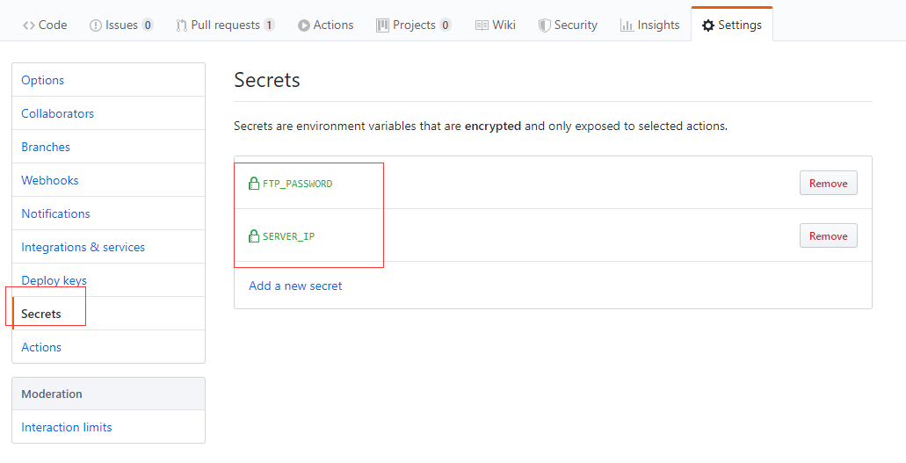

当github action遇到element-ui-admin
Github Actions是github搞的一个持续集成服务,现在还在测试中,如果想要使用需要到官网去申请.
现在我想使用github actions实现vue-element-admin做的一个管理后台的自动构建发布到生产服务器的一系列过程
新建github workflow

进入github仓库的主页点击actions就可以创建一个新的workflow
新建文件的路径在仓库根目录的./github/workflows/
我之前误操作不知道为什么新建在仓库的根目录
字段说明
-
name字段是 workflow 的名称。如果省略该字段，默认为当前 workflow 的文件名name: CI -
on字段指定触发 workflow 的条件//push时触发 on: [push] //push和pull时触发 on: [push, pull_request] //只在master分支push时触发 on: push: branches: - master -
jobs表示要执行的一项或多项任务jobs: my_job1: xxxxxxx xxxx my_job2: xxxxx xxxmy_job1和my_job2称为job_id
-
jobs.<job_id>.runs-on字段指定运行所需要的虚拟机环境。它是必填字段。目前可用的虚拟机如下ubuntu-latest，ubuntu-18.04或ubuntu-16.04windows-latest，windows-2019或windows-2016macOS-latest或macOS-10.14
-
jobs.<job_id>.steps字段指定每个 Job 的运行步骤，可以包含一个或多个步骤。每个步骤都可以指定以下字段-
steps.name：步骤名称 -
steps.run：该步骤运行的linux命令 如pwdls-l等 -
steps.uses:该步骤使用actions market中的别人写好的action -
steps.uses.with:该步骤是填入别人定义好的参数,比如在hellow_action中定义好了三个参数(first_name,middle_name, andlast_name)jobs: my_first_job: steps: - name: My first step uses: actions/hello_world@master with: first_name: Mona middle_name: The last_name: Octocatsteps.uses.env和with类似
-
我的action
下载项目代码
uses: actions/checkout@master
@master是指定master的代码 如果想要下载某个tag或某个commit的代码,如下
actions/checkout@74bc508 # 指向一个 commit
actions/checkout@v1.0 # 指向一个标签
actions/checkout@master # 指向一个分支
npm build
- name: npm install, build, and test
run: |
npm install
npm run build:prod --if-present
env:
CI: true
ssh到生产服务器备份现在正在运行的静态网页
这一部使用了appleboy的ssh-action,这个action就是从action market中找到的 具体文档在这
name: backup admin-web
uses: appleboy/ssh-action@master
with:
host: ${{ secrets.SERVER_IP }}
username: root
password: ${{ secrets.FTP_PASSWORD }}
port: 22
script: |
cp -r /root/glass/admin-web /root/glass/admin-web-old
如果actions的配置文件里重要的信息,比如密码或密钥可以使用秘密环境变量来替代${{secrets.xxxx}}

把dist部署到生产服务器
vue-element-admin build之后的静态文件在根目录的dist文件夹,所以我要把dist文件夹内的文件都上穿到生产服务器里
这里使用了SamKirkland/FTP-Deploy-Action@2.0.0 文档
uses: SamKirkland/FTP-Deploy-Action@2.0.0
env:
FTP_SERVER: ${{ secrets.SERVER_IP }}
FTP_USERNAME: root
FTP_PASSWORD: ${{ secrets.FTP_PASSWORD }}
METHOD: sftp
LOCAL_DIR: dist #要上传的目录
REMOTE_DIR: /root/glass/admin-web #上传到服务器的目录
ARGS: --delete
全部action文件
name: Node CI
on:
push:
branches:
- master
jobs:
build:
runs-on: ubuntu-latest
steps:
- uses: actions/checkout@master
- name: Use Node.js 12.x
uses: actions/setup-node@v1
with:
node-version: '12.x'
- name: npm install, build, and test
run: |
npm install
npm run build:prod --if-present
env:
CI: true
- name: backup admin-web
uses: appleboy/ssh-action@master
with:
host: ${{ secrets.SERVER_IP }}
username: root
password: ${{ secrets.FTP_PASSWORD }}
port: 22
script: |
cp -r /root/glass/admin-web /root/glass/admin-web-old
- name: deploy to server
uses: SamKirkland/FTP-Deploy-Action@2.0.0
env:
FTP_SERVER: ${{ secrets.SERVER_IP }}
FTP_USERNAME: root
FTP_PASSWORD: ${{ secrets.FTP_PASSWORD }}
METHOD: sftp
LOCAL_DIR: dist
REMOTE_DIR: /root/glass/admin-web
ARGS: --delete
运行结果

参考
- 原文作者：Noel
- 原文链接：https://blog.18881888.xyz/post/2019.10.21_%E5%BD%93github-action%E9%81%87%E5%88%B0element-ui-admin/
- 版权声明：本作品采用知识共享署名-非商业性使用-禁止演绎 4.0 国际许可协议进行许可，非商业转载请注明出处（作者，原文链接），商业转载请联系作者获得授权。